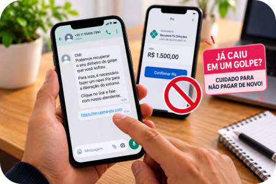

Você fez um Pix. Pouco depois, percebeu que alguma coisa estava errada.
A pessoa desapareceu. A história não fazia sentido. O anúncio era falso. A mensagem vinha de um golpista. Ou alguém se passou por uma empresa, banco, amigo ou familiar.
Nessa hora, é comum bater o desespero. Mas existe uma coisa mais importante do que ficar pensando no que deveria ter feito: agir rapidamente.
O Banco Central possui um mecanismo específico para determinadas situações de fraude envolvendo Pix, chamado Mecanismo Especial de Devolução (MED). Ele não garante que o dinheiro será recuperado, mas pode permitir a devolução integral ou parcial dos recursos quando forem atendidas as condições previstas.
1. Conteste o Pix o mais rápido possível
Abra o aplicativo da instituição financeira utilizada para fazer o Pix, localize a transação e procure a opção de contestação.
Nos casos de golpe, fraude ou crime, essa contestação pode acionar o Mecanismo Especial de Devolução (MED). O pedido pode ser registrado em até 80 dias após a transação, mas não há motivo para esperar: quanto antes a situação for comunicada, mais cedo poderá começar a análise e a tentativa de bloqueio dos recursos.
Dica da Lu: percebeu o golpe? Não espere até amanhã. Faça a contestação pelo aplicativo da sua instituição e procure os canais oficiais do banco.
2. O que é o MED?
MED significa Mecanismo Especial de Devolução. Ele foi criado pelo Banco Central para facilitar a devolução de valores em determinadas situações envolvendo fraude, golpe ou crime no Pix.
Depois que a contestação é registrada, as instituições envolvidas analisam o caso conforme as regras do mecanismo. Se a fraude for reconhecida e houver recursos disponíveis para devolução, a vítima poderá receber valores de volta.
O MED não garante a devolução do dinheiro.
A recuperação pode ser integral, parcial ou não ocorrer. Isso depende da análise do caso e da existência de recursos que possam ser bloqueados e devolvidos.
Por isso, desconfie de qualquer pessoa que prometa “recuperar seu Pix com certeza”.
3. O MED não serve para qualquer problema com Pix
O MED não funciona como um “cancelamento de Pix”. Ele é destinado às situações previstas nas regras do mecanismo, especialmente fraude, golpe ou crime, além de determinadas falhas operacionais.
Ele não se aplica a um simples desacordo comercial entre comprador e vendedor e também não é destinado à simples transferência feita por engano para a pessoa errada.
Ao fazer a contestação, relate corretamente o que aconteceu.
Fiz um Pix para o golpista. E agora?
Guarde esta sequência:
4. Antes de apagar qualquer coisa, guarde as provas
Depois de perceber o golpe, a vontade pode ser bloquear imediatamente o contato e apagar tudo. Primeiro, preserve as informações.
Guarde, sempre que disponíveis, prints das conversas, telefone ou perfil utilizado, anúncio ou página, comprovante do Pix, valor, data e horário, dados apresentados na transação e outros registros relacionados ao ocorrido.
Essas informações podem ajudar na comunicação com a instituição financeira, no registro da ocorrência e em eventual investigação. Depois de preservar o necessário, interrompa o contato com o golpista.
5. Registre o Boletim de Ocorrência
O Ministério da Justiça e Segurança Pública orienta a vítima a registrar Boletim de Ocorrência, presencialmente ou pela delegacia virtual do estado, quando disponível.
Relate com clareza como ocorreu a fraude e inclua, sempre que possível, o contato suspeito, número utilizado, data e horário, conteúdo das mensagens, prints, registros de chamadas, valor do prejuízo e informações sobre a transferência.

6. Cuidado com o “segundo golpe”
Depois de sofrer uma fraude, tenha cuidado com pessoas que aparecem oferecendo “recuperação garantida do Pix”, “desbloqueio imediato do dinheiro”, “acesso ao sistema do banco” ou qualquer solução mediante novo pagamento.
Não faça outro Pix para tentar recuperar o primeiro. Procure exclusivamente sua instituição financeira pelos canais oficiais e siga as orientações das autoridades competentes.
E se alguém disser que fez um Pix por engano para mim?
Não confie apenas em uma mensagem ou comprovante enviado por outra pessoa. Confira seu próprio extrato bancário.
Se o dinheiro realmente entrou em sua conta e você decidir devolvê-lo, utilize a funcionalidade “Devolver” associada à própria transação recebida. Dessa forma, a devolução fica vinculada ao Pix original.
Evite fazer um novo Pix para uma chave diferente simplesmente porque alguém enviou uma mensagem pedindo.
Dica da Lu: recebeu um Pix inesperado? Confira primeiro o seu próprio extrato. Se precisar devolver, use a função “Devolver” da própria transação.
Checklist da Lu
☑ Contestação feita
☑ Instituição financeira comunicada
☑ Provas preservadas
☑ B.O. registrado
☑ Caso acompanhado
Para terminar...
Perceber que caiu em um golpe pode provocar vergonha, raiva, ansiedade e vontade de resolver tudo de qualquer maneira. Mas esse é justamente o momento de agir com método.
Não negocie novamente com o golpista. Não pague alguém que apareceu prometendo recuperar o dinheiro. Não espere para procurar sua instituição financeira.
Percebeu → contestou → preservou → registrou → acompanhou.
O MED é uma possibilidade de recuperação — não uma garantia de devolução.
Fontes consultadas
Banco Central do Brasil — Mecanismo Especial de Devolução (MED) — funcionamento, prazo e limites do mecanismo.
Banco Central do Brasil — aprimoramentos na jornada de contestação do MED — regras gerais e contestação nos aplicativos.
Ministério da Justiça e Segurança Pública — Caí no golpe do falso Pix — contato com o banco, preservação de informações e registro do B.O.